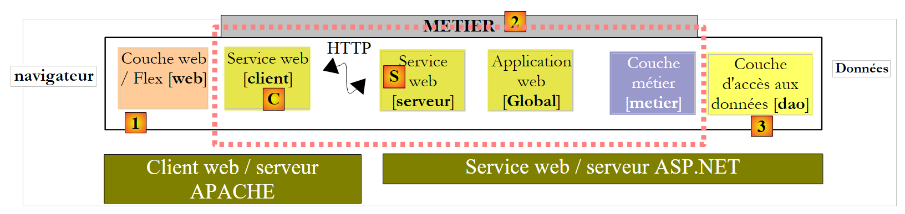
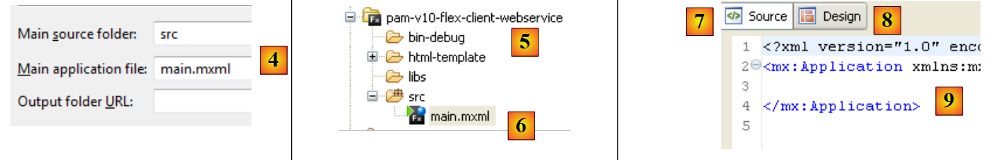
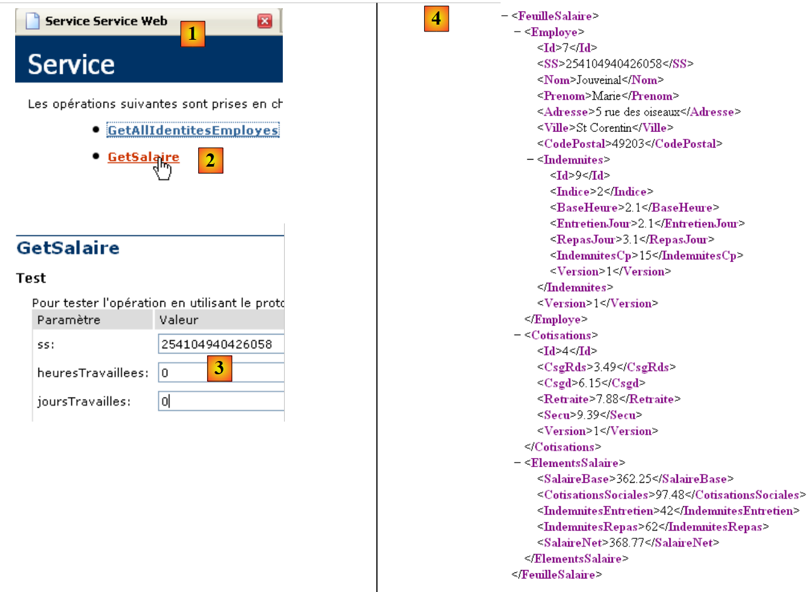
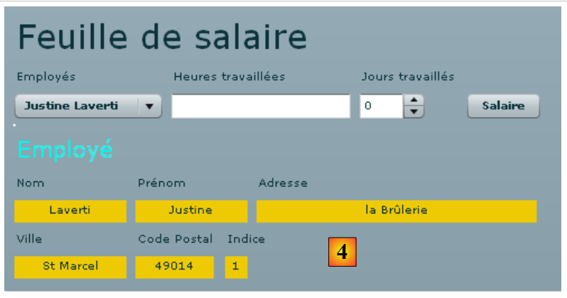
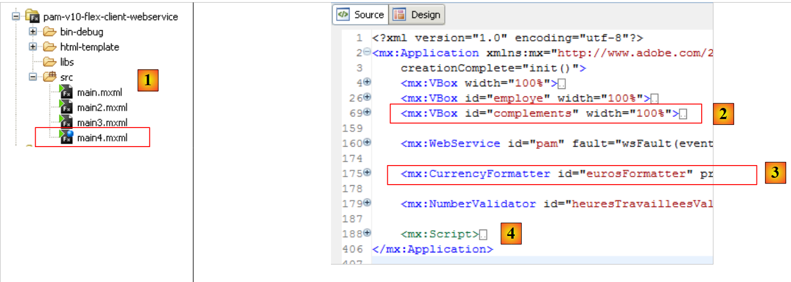

14. De applicatie [SimuPaie] – versie 10 – Flex-client van een webservice ASP.NET
We presenteren nu een Flex-client van de webservice ASP.NET uit versie 5. De gebruikte IDE is Flex Builder 3. Een demoversie van dit product kan worden gedownload via de URL [https://www.adobe.com/cfusion/tdrc/index.cfm?loc=fr_fr&product=flex]. Flex Builder 3 is een IDE Eclipse. Om de Flex-client uit te voeren, gebruiken we bovendien een Apache-webserver van de Wamp-tool [http://www.wampserver.com/]. Elke Apache-server is hiervoor geschikt. De browser die de Flex-client weergeeft, moet minimaal over de Flash Player-plug-in versie 9 beschikken.
Flex-applicaties hebben als bijzonderheid dat ze binnen de Flash Player-plug-in van de browser worden uitgevoerd. In dat opzicht lijken ze op Ajax-applicaties, die in de naar de browser verzonden pagina’s scripts JavaScript insluiten die vervolgens binnen de browser worden uitgevoerd. Een Flex-toepassing is geen webtoepassing in de gebruikelijke zin van het woord: het is een clienttoepassing voor diensten die door webservers worden geleverd. In dat opzicht is het vergelijkbaar met een desktoptoepassing die als client voor diezelfde diensten zou fungeren. Er is echter één verschil: de toepassing wordt in eerste instantie gedownload vanaf een webserver naar een browser die is uitgerust met de Flash Player-plug-in die de toepassing kan uitvoeren.
Net als een desktopapplicatie bestaat een Flex-applicatie hoofdzakelijk uit twee onderdelen:
- een presentatiegedeelte: de weergaven die in de browser worden getoond. Deze weergaven zijn net zo rijk aan functies als de vensters van desktopapplicaties. Een weergave wordt beschreven met behulp van een opmaaktaal genaamd MXML.
- een codegedeelte dat voornamelijk de gebeurtenissen afhandelt die worden veroorzaakt door acties van de gebruiker op de weergave. Deze code kan ook worden geschreven in MXML of in een objectgeoriënteerde taal genaamd ActionScript. Er moet onderscheid worden gemaakt tussen twee soorten gebeurtenissen:
- de gebeurtenis waarbij communicatie met de webserver nodig is: het vullen van een lijst met gegevens die door een webapplicatie worden aangeleverd, het verzenden van formuliergegevens naar de server, ... Flex biedt een aantal methoden om op een voor de ontwikkelaar transparante manier met de server te communiceren. Deze methoden zijn standaard asynchroon: de gebruiker kan tijdens het verzoek aan de server blijven interageren met de weergave.
- de gebeurtenis die de weergegeven weergave wijzigt zonder gegevensuitwisseling met de server, bijvoorbeeld het slepen van een item uit een boomstructuur om het in een lijst neer te zetten. Dit type gebeurtenis wordt volledig lokaal binnen de browser verwerkt.
Een Flex-toepassing wordt vaak als volgt uitgevoerd:
 |
- in [1] wordt een pagina HTML opgevraagd
- in [2], en deze wordt verzonden. De pagina bevat een binair bestand SWF (ShockWave Flash) met daarin de volledige Flex-toepassing: alle weergaven en de bijbehorende code voor gebeurtenisafhandeling. Dit bestand wordt uitgevoerd door de Flash Player-plug-in van de browser.
 |
- De Flex-client wordt lokaal in de browser uitgevoerd, behalve wanneer deze externe gegevens nodig heeft. In dat geval vraagt de client deze op bij de server [3]. De client ontvangt de gegevens in [4] in verschillende formaten: XML of binair. De op de webserver opgevraagde applicatie kan in elke willekeurige taal zijn geschreven. Alleen het formaat van het antwoord is van belang.
We hebben de uitvoeringsarchitectuur van een Flex-toepassing beschreven, zodat de lezer het verschil begrijpt tussen deze architectuur en die van een klassieke webtoepassing, waarbij de pagina’s geen code (JavaScript, Flex, Silverlight, …) bevatten die de browser zou uitvoeren. In het laatste geval is de browser passief: hij geeft gewoon HTML-pagina’s weer die op de webserver zijn opgebouwd en door deze naar de browser worden verzonden.
14.1. Architectuur van de client/server-toepassing
De geïmplementeerde client/server-architectuur is vergelijkbaar met die van de versies 6 en 8:
 |
In [1] wordt de weblaag ASP.NET vervangen door een Flex-weblaag geschreven in MXML en ActionScript. De client [C] wordt gegenereerd door de Flex Builder IDE. Hierbij moet worden opgemerkt dat deze architectuur twee niet-weergegeven webservers omvat:
- een webserver ASP.NET die de webservice [S] uitvoert
- een webserver APACHE waarop de webclient [1] draait
14.2. Het Flex 3-project van de client
We bouwen de Flex-client met Flex Builder 3: IDE:
 |
- In Flex Builder 3 maken we een nieuw project aan in [1]
- we geven het een naam in [2] en we geven in [3] aan in welke map het moet worden gegenereerd
 |
- in [4] geef je de hoofdtoepassing (die zal worden uitgevoerd) een naam
- in [5] wordt het project, zodra het is gegenereerd
- in [6], het hoofdbestand van de applicatie MXML
- een bestand MXML bevat een weergave en de code voor het beheer van de gebeurtenissen daarvan. Het tabblad [Source] [7] geeft toegang tot het bestand MXML. Daarin bevinden zich <mx>-tags die de weergave beschrijven, evenals ActionScript-code.
- De weergave kan grafisch worden opgebouwd met behulp van het tabblad [Design] [8]. De tags MXML die de weergave beschrijven, worden dan automatisch gegenereerd in het tabblad [Source]. Het omgekeerde geldt ook: de MXML-tags die rechtstreeks in het tabblad [Source] worden toegevoegd, worden grafisch weergegeven in het tabblad [Design].
14.3. Weergave nr. 1
We gaan stap voor stap een webinterface bouwen die vergelijkbaar is met die van versie 1 (zie paragraaf 4). We bouwen eerst de volgende interface:
 |
- in [1], het scherm dat wordt weergegeven wanneer de verbinding met de webservice tot stand is gebracht. De keuzelijst met medewerkers wordt dan ingevuld.
- in [2], het scherm wanneer de verbinding met de webservice niet tot stand kon worden gebracht. Er wordt dan een foutmelding weergegeven.
Het hoofdbestand [main.xml] van de klant ziet er als volgt uit:
<?xml version="1.0" encoding="utf-8"?>
<mx:Application xmlns:mx="http://www.adobe.com/2006/mxml" layout="vertical"
creationComplete="init()">
<mx:VBox width="100%">
<mx:Label text="Feuille de salaire" fontSize="30"/>
<mx:HBox>
<mx:VBox>
<mx:Label text="Employés"/>
<mx:ComboBox id="cmbEmployes" dataProvider="{employes}" labelFunction="displayEmploye"/>
</mx:VBox>
<mx:VBox>
<mx:Label text="Heures travaillées"/>
<mx:TextInput id="txtHeuresTravaillees"/>
</mx:VBox>
<mx:VBox>
<mx:Label text="Jours travaillés"/>
<mx:NumericStepper id="joursTravailles" minimum="0" maximum="31" stepSize="1"/>
</mx:VBox>
<mx:VBox>
<mx:Label text=""/>
<mx:Button id="btnSalaire" label="Salaire"/>
</mx:VBox>
</mx:HBox>
<mx:TextArea id="msg" minWidth="400" minHeight="100" editable="false" visible="true" enabled="true" horizontalScrollPolicy="auto" verticalScrollPolicy="auto" x="0" y="0" maxHeight="100" maxWidth="400"/>
</mx:VBox>
<mx:WebService ...>
...
</mx:WebService>
<mx:Script>
<![CDATA[
...
// gegevens
[Bindable]
private var employes : ArrayCollection;
private function init():void{
...
}
]]>
</mx:Script>
</mx:Application>
In deze code moet onderscheid worden gemaakt tussen verschillende zaken:
- de definitie van de applicatie (regels 2-3)
- de beschrijving van de weergave ervan (regels 4-25)
- de gebeurtenishandlers in de taal ActionScript binnen de tag <mx:Script> (regels 31-42).
- de definitie van de externe webservice (regels 27-29)
Laten we om te beginnen de definitie van de applicatie zelf en de beschrijving van de weergave ervan toelichten:
- regels 2-3: definiëren:
- de manier waarop de componenten in de container van de weergave worden geplaatst. Het attribuut layout="vertical" geeft aan dat de componenten onder elkaar komen te staan.
- de methode die moet worden uitgevoerd wanneer de weergave is geïnstantieerd, c.a.d. het moment waarop alle componenten zijn geïnstantieerd. Het attribuut creationComplete="init();" geeft aan dat de methode init op regel 38 moet worden uitgevoerd. creationComplete is een van de gebeurtenissen die de klasse Application kan genereren.
- de regels 4-25 definiëren de componenten van de weergave
- regels 4-25: een verticale container: de componenten worden hier onder elkaar geplaatst
- regel 5: definieert een tekst
- regels 6-23: een horizontale container: de componenten worden hierin horizontaal geplaatst.
- regels 7-10: een verticale container die een tekst en een vervolgkeuzelijst zal bevatten
- regel 8: de tekst
- regel 9: de vervolgkeuzelijst waarin de lijst met medewerkers wordt geplaatst. De tag dataProvider="{employes}" geeft de bron aan van de gegevens waarmee de lijst moet worden gevuld. Hier wordt de lijst gevuld met het object employes dat op regel 36 is gedefinieerd. Om dataProvider="{employes}" te kunnen schrijven, moet het veld employes het attribuut [Bindable] hebben (regel 35). Dit attribuut maakt het mogelijk om buiten de tag <mx:Script> naar de variabele ActionScript te verwijzen. Het veld employes is van het type ArrayCollection, een type ActionScript waarmee lijsten met objecten kunnen worden opgeslagen, in dit geval een lijst met objecten van het type Employe.
- regels 11-14: een verticale container die tekst en een invoerveld zal bevatten
- regel 12: de tekst
- regel 13: het invoerveld voor gewerkte uren.
- regels 15-18: een verticale container die een tekst en een teller zal bevatten
- regel 16: de tekst
- regel 17: de oploopknop waarmee de gewerkte dagen kunnen worden ingevoerd.
- regels 19-22: een verticale container met tekst en een knop waarmee het salaris van de in de keuzelijst geselecteerde persoon wordt berekend.
- regel 20: de tekst
- regel 21: de knop.
- regel 23: einde van de horizontale container die op regel 6 is begonnen
- regel 24: een tekstvak in een component van het type TextArea. Hierin worden foutmeldingen weergegeven.
- regel 25: einde van de verticale container die op regel 4 is begonnen
De regels 4-25 genereren de volgende weergave in het tabblad [Design]:
 |
- [1]: is gegenereerd door de component Label uit regel 5
- [2]: is gegenereerd door de component ComboBox uit regel 9
- [3]: is gegenereerd door de component TextInput van regel 13
- [4]: is gegenereerd door de component NumericStepper van regel 17
- [5]: is gegenereerd door de component Button van regel 21
- [6]: is gegenereerd door de component TextArea op regel 24
Laten we nu de declaratie van de externe webservice bekijken:
<mx:WebService id="pam"
wsdl="http://localhost:1077/Service1.asmx?WSDL"
fault="wsFault(event);"
showBusyCursor="true">
<mx:operation
name="GetAllIdentitesEmployes"
result="loadEmployesCompleted(event)"
fault="loadEmployesFault(event);">
<mx:request/>
</mx:operation>
</mx:WebService>
- regel 1: de webservice is een component met de identificatiecode pam (attribuut id)
- regel 2: de URI van het bestand WSDL van de webservice (zie paragraaf 9.2)
- regel 3: de methode die moet worden uitgevoerd in geval van een fout tijdens de communicatie met de webservice: de methode wsFault.
- regel 4: verzoek om een indicator weer te geven om de gebruiker te laten zien dat er een uitwisseling met de webservice plaatsvindt.
- regels 5-10: een van de bewerkingen die door de externe webservice worden aangeboden. In dit geval de methode GetAllIdentitesEmployes.
- regel 7: de methode die moet worden uitgevoerd wanneer de aanroep van deze methode normaal wordt afgerond, c.a.d. Dit gebeurt wanneer de webservice de lijst met medewerkers correct terugstuurt
- regel 8: de methode die moet worden uitgevoerd wanneer de aanroep van deze methode met een fout afloopt.
- regel 9: de parameters van de bewerking GetAllIdentitesEmployes. We weten dat deze methode geen parameters verwacht. Daarom laten we de tag <mx:request> leeg.
Laten we nu de code ActionScript bekijken die aan de webservice is gekoppeld:
<mx:Script>
<![CDATA[
import mx.rpc.events.FaultEvent;
import mx.collections.ArrayCollection;
import mx.rpc.events.ResultEvent;
// gegevens
[Bindable]
private var employes : ArrayCollection;
private function init():void{
// de coördinaten van het berichtveld worden genoteerd
msgHeight=msg.height;
msgWidth=msg.width;
// het berichtveld wordt verborgen
hideMsg();
// verzoek aan de externe webservice om de vereenvoudigde lijst met medewerkers op te halen
pam.GetAllIdentitesEmployes.send();
}
private function wsFault(event:Event):void{
// de fout wordt gemeld
msg.text="Service distant indisponible";
showMsg();
}
private function loadEmployesCompleted(event:ResultEvent):void{
// de keuzelijst met medewerkers wordt ingevuld
employes=event.result as ArrayCollection;
}
private function displayEmploye(employe:Object):String{
// identiteit van een medewerker
return employe.Prenom + " " + employe.Nom;
}
private function loadEmployesFault(event:FaultEvent):void{
// foutmelding weergeven
msg.text=event.fault.message;
// formulier
showMsg();
}
// beheer van blokken
private var msgWidth:int;
private var msgHeight:int;
private function hideMsg():void{
msg.height=0;
msg.width=0;
}
private function showMsg():void{
msg.height=msgHeight;
msg.width=msgWidth;
}
]]>
</mx:Script>
- regel 11: de methode init wordt bij het opstarten van de applicatie uitgevoerd omdat we het volgende hebben geschreven:
<mx:Application xmlns:mx="http://www.adobe.com/2006/mxml" layout="vertical"
creationComplete="init()">
- regels 13-14: de hoogte en breedte van het berichtgebied worden opgeslagen. Er worden twee methoden gebruikt: hideMsg (regels 48-51) en showMsg (regels 53-56) om het berichtvenster respectievelijk te verbergen of weer te geven, afhankelijk van of er al dan niet een fout is opgetreden. De methode hideMsg verbergt het berichtvenster door de hoogte en breedte ervan op 0 te zetten. De methode showMsg toont het berichtvenster door de hoogte en breedte te herstellen die in de methode init zijn opgeslagen.
- regel 16: het berichtvenster wordt verborgen. In eerste instantie is er geen fout.
- regel 18: de methode GetAllIdentitesEmploye (regel 6 van de webservice) van de webservice pam (regel 1 van de webservice) wordt aangeroepen. De aanroep is asynchroon. Regel 7 van de webservice geeft aan dat de methode loadEmployesCompleted wordt uitgevoerd als deze asynchrone aanroep succesvol afloopt. Regel 8 van de webservice geeft aan dat de methode loadEmployesFault wordt uitgevoerd als deze asynchrone aanroep mislukt.
- regel 27: de methode loadEmployesCompleted die wordt uitgevoerd als de aanroep naar de webservice op regel 18 succesvol is.
- regel 29: we weten dat de webservice een antwoord XML retourneert. Het is goed om hierop terug te komen om de code ActionScript te begrijpen:
 |
- in [1], pagina van de webservice [Service.asmx]
- naar [2], de link naar de testpagina van de methode [GetAllIdentitesEmployes]
- naar [3], de test is voltooid. Er worden geen parameters verwacht.
- in [4]: het antwoord XML bevat een tabel met werknemers. Voor elk van hen zijn er vijf gegevens ingekapseld in de tags <Id>, <Version>, <SS>, <Nom>, <Prenom>. Als het antwoord XML wordt geplaatst in een tabel employes van het type ArrayCollection:
- employes.getItemAt(i): is het element nr. i van de tabel
- employes.getItemAt(i).SS: is het socialezekerheidsnummer van deze werknemer.
- employes.getItemAt(i).Naam: is de naam van deze werknemer
- ...
Laten we teruggaan naar de code ActionScript:
- regel 29: event.result vertegenwoordigt het antwoord XML van de webservice. De methode GetAllIdentitesEmployes retourneert een array met werknemers. event.result vertegenwoordigt deze array met werknemers. Deze wordt opgeslagen in een variabele van het type ArrayCollection, een type dat in het algemeen een verzameling objecten vertegenwoordigt. Deze variabele, genaamd employes, wordt in regel 9 gedeclareerd. We herinneren ons dat deze variabele de gegevensbron is voor de keuzelijst met medewerkers:
<mx:ComboBox id="cmbEmployes" dataProvider="{employes}" labelFunction="displayEmploye"/>
Voor elke medewerker uit de gegevensbron roept de keuzelijst de methode displayEmploye (attribuut labelFunction) aan om de medewerker weer te geven. In de regels 32-34 zien we dat deze methode de voor- en achternaam van de medewerker weergeeft.
- regel 37: de methode loadEmployesFault, die wordt uitgevoerd als de aanroep van de webservice op regel 18 mislukt. event.fault.message is de foutmelding die door de webservice wordt teruggestuurd.
- regel 39: deze foutmelding wordt in het berichtveld geplaatst
- regel 41: het berichtveld wordt weergegeven.
Toen de applicatie werd gebouwd, werd de uitvoerbare code ervan in de map [bin-debug] van het Flex-project geplaatst:
 |
Hierboven
- vertegenwoordigt het bestand [main.html] het bestand HTML dat door de browser bij de webserver wordt opgevraagd om de Flex-client te verkrijgen
- is het bestand [main.swf] het binaire bestand van de Flex-client dat zal worden ingekapseld in de pagina HTML die naar de browser wordt verzonden en vervolgens door de Flash Player-plug-in van de browser wordt uitgevoerd.
We zijn klaar om de Flex-client uit te voeren. Eerst moeten we de benodigde uitvoeringsomgeving opzetten. Laten we terugkeren naar de geteste client/server-architectuur:
 |
Serverzijde:
- start de webservice ASP.NET [S]
Aan de clientzijde:
- start de Apache-server op waaraan de Flex-applicatie zal worden opgevraagd.
Hier gebruiken we de tool Wamp. Met deze tool kunnen we een alias toewijzen aan de map [bin-debug] van het Flex-project.
 |
- Het Wamp-pictogram bevindt zich onderaan het scherm [1]
- Klik met de linkermuisknop op het pictogram Wamp en selecteer de optie Apache [2] / Alias Directories [3, 4]
- selecteer de optie [5]: Een alias toevoegen
 |
- in [6] een alias (een willekeurige naam) toekennen aan de webapplicatie die zal worden uitgevoerd
- in [7] de hoofdmap van de webapplicatie aangeven die deze alias zal dragen: dit is de map [bin-debug] van het Flex-project dat we zojuist hebben gebouwd.
Laten we de structuur van de map [bin-debug] van het Flex-project nog eens bekijken:
 |
Het bestand [main.html] is het bestand HTML van de Flex-applicatie. Dankzij de alias die we zojuist hebben aangemaakt voor de map [bin-debug], kan dit bestand worden opgevraagd via URL en [http://localhost/pam-v10-flex-client-webservice/main.html]. We roepen dit op in een browser met de Flash Player-plug-in versie 9 of hoger:
 |
- in [1], het URL-bestand van de Flex-applicatie
- in [2], de medewerkerslijst wanneer alles goed gaat
- in [3], het resultaat wanneer de webservice is gestopt
Misschien bent u benieuwd naar de broncode van de ontvangen pagina HTML:
- De hoofdtekst van de pagina begint op regel 25. Deze bevat niet de klassieke HTML, maar een object (regel 28) van het type "application/x-shockwave-flash" (regel 41). Dit is het bestand [main.swf] (regel 31) dat te vinden is in de map [bin-debug] van het Flex-project. Het is een vrij groot bestand: ongeveer 600 K voor dit eenvoudige voorbeeld.
14.4. Weergave nr. 2
We gaan een nieuwe container van het type VBox toevoegen aan de huidige weergave:
 |
 |
- in [4,5] maken we van [main2.mxml] de nieuwe standaardtoepassing. Deze zal voortaan worden gecompileerd.
- In [6] wordt de standaardtoepassing aangegeven met een blauwe stip.
De container [1] geeft de informatie weer over de medewerker die is geselecteerd in de keuzelijst [2]. We dupliceren [main.xml] naar [main2.xml] en [3] om de nieuwe weergave op te bouwen. We gaan nu verder met [main2.xml].
 |
De wijziging die in het vorige project is aangebracht, is de toevoeging van de container op regel 26 hierboven, die de code MXML bevat van de container [1] van de weergave. We geven deze de ID employe, zodat we deze via code kunnen bewerken. Deze container moet namelijk kunnen worden verborgen of weergegeven met dezelfde techniek die eerder voor het berichtgebied is gebruikt.
Laten we teruggaan naar de weergave van de view:
 |
Laten we de verschillende containers van de nieuwe weergegeven informatie in kaart brengen:
- V1: verticale container voor alle componenten: de labels Employé, [1] en de horizontale containers [H1] en [H2]
- H1: horizontale container voor de informatie Nom, Prénom, Adresse
- V2: verticale container voor de omschrijving Nom en de weergave van de naam van de medewerker.
- H2: horizontale container voor de gegevens Ville, postcode, Indice
De volledige code van de container "employe" is als volgt:
<mx:VBox id="employe" width="100%">
<mx:Label text="Employé" fontSize="20" color="#09F3EB"/>
<mx:HBox>
<mx:VBox >
<mx:Label text="Nom"/>
<mx:VBox backgroundColor="#EECA05">
<mx:Text id="lblNom" minWidth="100" minHeight="20" fontFamily="Verdana" textAlign="center"/>
</mx:VBox>
</mx:VBox>
<mx:VBox >
<mx:Label text="Prénom"/>
<mx:VBox backgroundColor="#EECA05">
<mx:Text id="lblPreNom" minWidth="100" minHeight="20" fontFamily="Verdana" textAlign="center"/>
</mx:VBox>
</mx:VBox>
<mx:VBox >
<mx:Label text="Adresse"/>
<mx:VBox backgroundColor="#EECA05">
<mx:Text id="lblAdresse" minWidth="250" minHeight="20" fontFamily="Verdana" textAlign="center"/>
</mx:VBox>
</mx:VBox>
</mx:HBox>
<mx:HBox>
<mx:VBox >
<mx:Label text="Ville"/>
<mx:VBox backgroundColor="#EECA05">
<mx:Text id="lblVille" minWidth="100" minHeight="20" fontFamily="Verdana" textAlign="center"/>
</mx:VBox>
</mx:VBox>
<mx:VBox >
<mx:Label text="Code Postal"/>
<mx:VBox backgroundColor="#EECA05">
<mx:Text id="lblCodePostal" minWidth="70" minHeight="20" fontFamily="Verdana" textAlign="center"/>
</mx:VBox>
</mx:VBox>
<mx:VBox >
<mx:Label text="Indice"/>
<mx:VBox backgroundColor="#EECA05">
<mx:Text id="lblIndice" minWidth="20" minHeight="20" fontFamily="Verdana" textAlign="center"/>
</mx:VBox>
</mx:VBox>
</mx:HBox>
</mx:VBox>
De code spreekt voor zich. Laten we kort de verticale container toelichten die bijvoorbeeld de naam van de medewerker weergeeft:
- regels 4-9: de verticale container
- regel 5: de tekst Nom
- regels 6-8: een verticale container die de naam van de medewerker weergeeft (regel 7). We willen de velden die informatie over de medewerker weergeven een andere achtergrondkleur geven. De component Text biedt deze mogelijkheid niet (of ik heb het niet goed gevonden). De achtergrondkleur van een container kan worden ingesteld. Daarom is deze hier gebruikt.
- regel 7: de component Text die de naam van de medewerker weergeeft. We stellen hier een minimale hoogte en breedte in.
We gaan de container „employe“ gebruiken om de gegevens van de medewerker weer te geven die de gebruiker selecteert in de medewerkercombinatielijst, en dit onafhankelijk van de knop [Salaire], die later de taak krijgt om het salaris te berekenen zodra alle benodigde gegevens zijn ingevoerd.
Om de wijziging van de selectie in de keuzelijst „employes“ te verwerken, wordt de code MXML als volgt aangepast:
<mx:ComboBox id="cmbEmployes" dataProvider="{employes}" labelFunction="displayEmploye" change="displayInfosEmploye();"/>
De gebeurtenis ‘change’ wordt door de keuzelijst verzonden wanneer de gebruiker zijn selectie wijzigt. De methode die deze gebeurtenis afhandelt, is displayInfosEmploye.
Laten we nog eens kijken naar de methoden die door de externe webservice worden aangeboden:
// lijst met alle identiteiten van de werknemers
public Employe[] GetAllIdentitesEmployes();
// ------- de salarisberekening
public FeuilleSalaire GetSalaire(string ss, double heuresTravaillees, int joursTravailles);
We willen hier de gegevens (naam, voornaam, ...) weergeven van de medewerker die in de keuzelijst is geselecteerd. De webservice biedt geen methode om deze gegevens op te halen. We kunnen echter de methode GetSalaire gebruiken door het SS-nummer van de geselecteerde medewerker door te geven en 0 voor de gewerkte uren en dagen. Er wordt dan weliswaar een overbodige loonberekening uitgevoerd, maar de methode GetSalaire retourneert een object van het type FeuilleSalaire waarin we de benodigde informatie terugvinden.
De huidige declaratie van de webservice wordt aangepast om de definitie van de methode GetSalaire op te nemen:
<mx:WebService id="pam"
wsdl="http://localhost:1077/Service1.asmx?WSDL"
fault="wsFault(event);"
showBusyCursor="true">
<mx:operation
name="GetAllIdentitesEmployes"
result="loadEmployesCompleted(event)"
fault="loadEmployesFault(event);">
<mx:request/>
</mx:operation>
<mx:operation name="GetSalaire"
result="getSalaireCompleted(event)"
fault="getSalaireFault(event);">
<mx:request>
<ss>{employes.getItemAt(cmbEmployes.selectedIndex).SS}</ss>
<heuresTravaillees>{heuresTravaillees}</heuresTravaillees>
<joursTravailles>{joursDeTravail}</joursTravailles>
</mx:request>
</mx:operation>
</mx:WebService>
- regels 11-19: de definitie van de methode GetSalaire van de webservice
- regel 12: definieert de methode die moet worden uitgevoerd wanneer de aanroep van de methode GetSalaire slaagt
- regel 13: definieert de methode die moet worden uitgevoerd wanneer de aanroep van de methode GetSalaire mislukt
- regels 14-18: de methode GetSalaire verwacht drie parameters. Deze worden gedefinieerd binnen een <mx:request>-tag in de vorm <param1>waarde1</param1>. De identificatie param1 mag niet willekeurig zijn. Je moet de namen gebruiken die de webservice verwacht:
 |
- in [1], de pagina van de webservice [http://localhost:1077/Service1.asmx]
- in [2], de link naar de testpagina van de methode [GetSalaire]
- in [3], de parameters die de methode verwacht. Dit zijn de namen die moeten worden gebruikt als onderliggende tags van de tag <mx:request>.
Laten we teruggaan naar de declaratie van de webservice:
<mx:operation name="GetSalaire"
result="getSalaireCompleted(event)"
fault="getSalaireFault(event);">
<mx:request>
<ss>{employes.getItemAt(cmbEmployes.selectedIndex).SS}</ss>
<heuresTravaillees>{heuresTravaillees}</heuresTravaillees>
<joursTravailles>{joursDeTravail}</joursTravailles>
</mx:request>
</mx:operation>
- regel 5: de parameter ss. We herinneren ons dat bij het opstarten van de Flex-applicatie de tabel met alle werknemers is opgeslagen in een variabele `employes` van het type ArrayCollection.
- employes.getItemAt(i): is medewerker nr. i uit de array
- employes.getItemAt(i).SS: is het socialezekerheidsnummer van deze medewerker.
- cmbEmployes.selectedIndex: is het nummer van het geselecteerde element in de keuzelijst met werknemers cmbemployes.
Hoe weten we hierboven dat SS het socialezekerheidsnummer van een werknemer is? Hiervoor moeten we teruggaan naar het antwoord dat door de methode GetAllIdentitesEmployes is verzonden:
 |
- in [1], pagina van de webservice [Service.asmx]
- naar [2], de link naar de testpagina van de methode [GetAllIdentitesEmployes]
- naar [3], de test is voltooid. Er worden geen parameters verwacht.
- in [4]: het antwoord XML bevat een tabel met werknemers. Deze tabel is opgeslagen in de variabele employes. In [5] zien we dat SS inderdaad de tag is die wordt gebruikt om het socialezekerheidsnummer op te slaan.
Laten we de analyse van de webservice afronden:
<mx:operation name="GetSalaire"
result="getSalaireCompleted(event)"
fault="getSalaireFault(event);">
<mx:request>
<ss>{employes.getItemAt(cmbEmployes.selectedIndex).SS}</ss>
<heuresTravaillees>{heuresTravaillees}</heuresTravaillees>
<joursTravailles>{joursDeTravail}</joursTravailles>
</mx:request>
</mx:operation>
- regel 6: het aantal gewerkte uren wordt geleverd door de variabele heuresTravaillees
- regel 6: het aantal gewerkte dagen wordt geleverd door een variabele joursDeTravail
Deze variabelen moeten worden gedeclareerd in de tag <mx:Script> met het attribuut [Bindable], waardoor ze kunnen worden aangeroepen door componenten MXML (regels 7-10 hieronder).
<mx:Script>
<![CDATA[
...
// gegevens
[Bindable]
private var employes : ArrayCollection;
[Bindable]
private var heuresTravaillees:Number;
[Bindable]
private var joursDeTravail:int;
...
</mx:Script>
De code voor het beheer van gebeurtenissen in de weergave verandert als volgt:
<mx:Script>
<![CDATA[
import mx.rpc.events.FaultEvent;
import mx.collections.ArrayCollection;
import mx.rpc.events.ResultEvent;
// gegevens
[Bindable]
private var employes : ArrayCollection;
[Bindable]
private var heuresTravaillees:Number;
[Bindable]
private var joursDeTravail:int;
private function init():void{
// de hoogte en breedte van # blokken worden genoteerd
employeHeight=employe.height;
employeWidth=employe.width;
// bepaalde elementen worden verborgen
hideEmploye();
...
}
private function displayInfosEmploye():void{
// formulier
hideEmploye();
// een fictief salaris berekenen
heuresTravaillees=0;
joursDeTravail=0;
pam.GetSalaire.send();
}
private function getSalaireCompleted(event:ResultEvent):void{
...
}
private function getSalaireFault(event:FaultEvent):void{
...
}
// gedeeltelijke weergaven -------------------------------------------------
private var employeHeight:int;
private var employeWidth:int;
private function hideEmploye():void{
employe.height=0;
employe.width=0;
}
private function showEmploye():void{
employe.height=employeHeight;
employe.width=employeWidth;
}
]]>
</mx:Script>
- regel 15: de methode init, die bij het opstarten van de Flex-applicatie wordt uitgevoerd, slaat de hoogte en breedte van de verticale container employe op, zodat deze kan worden hersteld (regels 50-53) nadat deze is verborgen (regels 45-48).
- regel 24: de methode displayInfosEmploye wordt uitgevoerd wanneer de gebruiker zijn selectie in de keuzelijst met medewerkers wijzigt.
- regel 26: de container employe wordt verborgen als deze zichtbaar was
- regel 30: de methode GetSalaire van de webservice wordt asynchroon aangeroepen. We weten dat deze drie parameters verwacht:
<ss>{employes.getItemAt(cmbEmployes.selectedIndex).SS}</ss>
<heuresTravaillees>{heuresTravaillees}</heuresTravaillees>
<joursTravailles>{joursDeTravail}</joursTravailles>
- regel 1: de parameter ss is het nummer SS van de medewerker die in de keuzelijst met medewerkers is geselecteerd
- regel 2: de methode displayInfosEmploye wijst de waarde 0 toe aan de variabele heuresTravaillees (regel 28)
- regel 3: de methode displayInfosEmploye wijst de waarde 0 toe aan de variabele joursDeTravail (regel 29)
De methode GetSalaireCompleted wordt uitgevoerd als de methode GetSalaire van de webservice succesvol is afgerond:
private function getSalaireCompleted(event:ResultEvent):void{
// de foutmelding wordt verborgen
hideMsg();
// men ontvangt een loonstrook
var feuilleSalaire:Object=event.result;
// weergave
lblNom.text=feuilleSalaire.Employe.Nom;
lblPreNom.text=feuilleSalaire.Employe.Prenom;
lblAdresse.text=feuilleSalaire.Employe.Adresse;
lblVille.text=feuilleSalaire.Employe.Ville;
lblCodePostal.text=feuilleSalaire.Employe.CodePostal;
lblIndice.text=feuilleSalaire.Employe.Indice;
showEmploye();
}
- regel 3: het berichtveld wordt verborgen voor het geval het wordt weergegeven.
- regel 5: de loonstrook die door de methode GetSalaire is teruggestuurd, wordt opgehaald
Om te weten wat de methode GetSalaire precies terugstuurt, gaan we terug naar de pagina van de webservice:
 |
- in [1], de pagina van de webservice [Service.asmx]
- naar [2], de link die naar de testpagina van de methode [GetSalaire] leidt
- in [3] worden parameters opgegeven
- in [4], het verkregen resultaat XML.
Laten we teruggaan naar de methode getSalaireCompleted:
private function getSalaireCompleted(event:ResultEvent):void{
// de foutmelding wordt verborgen
hideMsg();
// men ontvangt een loonstrook
var feuilleSalaire:Object=event.result;
// weergave
lblNom.text=feuilleSalaire.Employe.Nom;
lblPreNom.text=feuilleSalaire.Employe.Prenom;
lblAdresse.text=feuilleSalaire.Employe.Adresse;
lblVille.text=feuilleSalaire.Employe.Ville;
lblCodePostal.text=feuilleSalaire.Employe.CodePostal;
lblIndice.text=feuilleSalaire.Employe.Indemnites.Indice;
showEmploye();
}
- regel 5: feuilleSalaire=event.result vertegenwoordigt de stroom XML [4] die door de methode GetSalaire wordt teruggestuurd. Uit deze stroom blijkt dat:
- feuilleSalaire.Employe de stroom XML van een medewerker is
- feuilleSalaire.Employe.Nom is de naam van deze medewerker
- ...
- regels 7-12: de stroom XML feuilleSalaire wordt gebruikt om de verschillende velden van de container ‘medewerker’ in te vullen.
- regel 13: de container 'medewerker' wordt weergegeven.
De methode getSalaireFault wordt uitgevoerd als de methode GetSalaire van de webservice afbreekt:
private function getSalaireFault(event:FaultEvent):void{
// foutmelding weergeven
msg.text=event.fault.message;
// formulier
showMsg();
}
- regel 3: de foutmelding event.fault.message wordt in het berichtveld geplaatst
- regel 5: het berichtveld wordt weergegeven
Hier eindigen de wijzigingen die nodig zijn voor deze nieuwe versie. Wanneer deze wordt opgeslagen en de syntaxis correct is, wordt de uitvoerbare versie gegenereerd in de map [bin-debug] van het project:
 |
Hierboven is [main2.html] de pagina HTML die het binaire bestand van de Flex-toepassing [main2.swf] bevat, dat door Flash Player zal worden uitgevoerd.
We kunnen deze nieuwe versie testen:
- de webservice ASP.NET moet worden gestart
- de Apache-server moet worden gestart voor de Flex-client
Ervan uitgaande dat de alias [pam-v10-flex-client-webservice] die in de vorige versie werd gebruikt nog steeds bestaat, vragen we de Apache-server om URL en [http://localhost/pam-v10-flex-client-webservice/main2.html] in een browser:
 |
 |
- in [1], de opgevraagde URL
- in [2], de combobox met medewerkers
- in [3], we wijzigen de selectie in de keuzelijst om de gebeurtenis change te activeren
- in [4], het verkregen resultaat: het dossier van Justine Laverti.
14.5. Weergave nr. 3
Weergave nr. 3 voert de geldigheidscontrole van het formulier uit. Hier wordt alleen het invoerveld "txtHeuresTravaillees" gecontroleerd. Zolang het formulier onjuist is, blijft de knop "btnSalaire" uitgeschakeld.
Om deze functionaliteit toe te voegen, dupliceren we [main2.mxml] in [main3.mxml]:
 |
Vanaf nu werken we met [main3.mxml], dat we als standaardtoepassing instellen (zie dit concept, paragraaf 14.4). Allereerst voegen we een attribuut toe aan de component "txtHeuresTravaillees":
<mx:TextInput id="txtHeuresTravaillees" change="validateForm(event)"/>
Telkens wanneer de inhoud van het invoerveld "txtHeuresTravaillees" verandert, wordt de methode validateForm aangeroepen. Dit is een lokale methode die door de ontwikkelaar is geschreven. Hierin zouden we kunnen controleren of de inhoud van het invoerveld "txtHeuresTravaillees" inderdaad een positief geheel getal is. We gaan het echter anders aanpakken door gebruik te maken van een validatiecomponent:
<mx:NumberValidator id="heuresTravailleesValidator" source="{txtHeuresTravaillees}" property="text"
precision="2" allowNegative="false"
invalidCharError="Caractères invalides"
precisionError="Deux chiffres au plus après la virgule"
negativeError="Le nombre d'heures doit être positif ou nul"
invalidFormatCharsError="Format invalide"
required="true"
requiredFieldError="Donnée requise"/>
- regel 1: met de component <mx:NumberValidator> kan worden gecontroleerd of een andere component een geheel getal of een reëel getal bevat.
- regel 1: het attribuut id geeft de component een identificatiecode.
- regel 1: source is de id van de component die wordt gecontroleerd door de component NumberValidator. Hier wordt het invoerveld „txtHeuresTravaillees“ gecontroleerd.
- regel 1: property is de naam van de eigenschap van de component source die de te controleren waarde bevat. Uiteindelijk wordt de waarde source.property gecontroleerd, in dit geval txtHeuresTravaillees.text.
- regel 2: precision bepaalt het maximale aantal toegestane decimalen. precision=0 controleert of het ingevoerde getal een geheel getal is.
- regel 2: allowNegative geeft aan of negatieve getallen zijn toegestaan of niet
- regel 7: required geeft aan of de invoer verplicht is of niet.
Wanneer niet aan een validatievoorwaarde wordt voldaan, wordt er een foutmelding weergegeven in een ballonnetje naast het betreffende onderdeel. Standaard zijn deze meldingen in het Engels. Het is mogelijk om deze meldingen zelf te definiëren:
- (vervolg)
- invalidCharError: de foutmelding wanneer de tekst een teken bevat dat niet in een getal mag voorkomen
- precisionError: de foutmelding wanneer het aantal decimalen niet overeenkomt met het kenmerk precision
- negativeError: de foutmelding wanneer het getal negatief is terwijl het attribuut allowNegative="false" is ingesteld
- requiredFieldError: de foutmelding wanneer er niets is ingevoerd terwijl het attribuut requiredField="true" is ingesteld
- invalidFormatCharsError: de foutmelding wanneer de tekst ongeldige tekens of een ongeldige opmaak bevat?
Laten we teruggaan naar de component "txtHeuresTravaillees":
<mx:TextInput id="txtHeuresTravaillees" change="validateForm(event)"/>
De methode validateForm zou als volgt kunnen zijn in de tag <mx:Script>:
private function validateForm(event:Event):void
{
// de gewerkte uren worden gevalideerd
var evt:ValidationResultEvent = heuresTravailleesValidator.validate();
// validatie geslaagd?
btnSalaire.enabled=evt.type==ValidationResultEvent.VALID;
}
- regel 4: de validator "heuresTravailleesValidator" wordt uitgevoerd. Deze levert een resultaat van het type ValidationResultEvent op.
- regel 6: evt.type is van het type String en geeft het type van de gebeurtenis aan. evt.type heeft twee mogelijke waarden voor het type ValidationResultEvent: „invalid“ of „valid“, weergegeven door de constanten ValidationResultEvent.INVALID en ValidationResultEvent.VALID. Als in regel 4 de validatie is geslaagd, moet evt.type de waarde ValidationResultEvent.VALID hebben. In dat geval is de knop btnSalaire geactiveerd; anders is deze uitgeschakeld.
Dit is voldoende om de geldigheid van de gewerkte uren te controleren.
 |
Hierboven heeft het compileren van het project de bestanden [main3.html] en [main3.swf] opgeleverd. We roepen URL en [http://localhost/pam-v10-flex-client-webservice/main3.html] op in een browser en controleren verschillende foutgevallen:
 |
 |
- een foutief veld heeft een rode rand [1, 2, 3], een correct veld een blauwe rand [4].
- In [4] valt op dat de knop [Salaire] actief is omdat het aantal gewerkte uren correct is.
14.6. Weergave nr. 4
Weergave nr. 4 vormt de afsluiting van het loonberekeningsformulier. Hiervoor dupliceren we [main3.xml] naar [main4.xml] en werken we voortaan met main4, dat we als standaardtoepassing instellen (zie paragraaf 14.4).
 |
De wijzigingen die zijn aangebracht in [main4.xml] en [1] zijn als volgt:
- er is een nieuwe verticale container toegevoegd aan de weergave [2] om de salariscomponenten van de werknemer weer te geven
- er is een component toegevoegd waarmee geldbedragen kunnen worden opgemaakt in [3]
- de weergave van de salariscomponenten wordt verzorgd door de handler die is gekoppeld aan de "klik"-gebeurtenis van de knop "btnSalaire".
De weergave verandert als volgt:
 |
De nieuwe container volgt hetzelfde principe als de vorige. Het is een verticale container VBox [V1] die vier horizontale containers HBox [Hi] bevat. De horizontale containers H1 tot en met H3 bestaan uit verticale containers met twee labels, waarvan het tweede zelf in een verticale container staat om een achtergrondkleur te hebben.
Vraag 1: schrijf de container voor het salaris. Deze zal hierna complements. worden genoemd
Vraag 2: schrijf de methoden waarmee de container complements kan worden verborgen of weergegeven. Gebruik daarbij de aanpak die eerder is toegepast voor de container employe.
We koppelen een handler aan de „click“-gebeurtenis van de knop „btnSalaire“:
<mx:Button id="btnSalaire" label="Salaire" click="calculerSalaire()"/>
De methode calculerSalaire is als volgt:
private function calculerSalaire():void{
// formulier voorbereiden
affichageSalaire=true;
msg.text="";
// parameters voor de loonberekening
heuresTravaillees=Number(txtHeuresTravaillees.text);
joursDeTravail=int(joursTravailles.value);
// het loon wordt opgevraagd bij de webservice
pam.GetSalaire.send();
}
- regel 3: de booleaanse waarde affichageSalaire geeft aan of de container complements, die de salariscomponenten weergeeft, al dan niet moet worden weergegeven. De methode getSalaireCompleted wordt bij twee gebeurtenissen uitgevoerd:
- bij het wijzigen van de werknemer in de keuzelijst met werknemers, om diens gegevens zonder het salaris weer te geven. In dat geval wordt affichageSalaire=false ingesteld.
- de berekening van het salaris
- regel 6: de tekst van het invoerveld txtHeuresTravaillees wordt omgezet in een reëel getal.
- regel 7: de waarde van de incrementator joursTravailles wordt omgezet in een geheel getal.
- regel 9: de externe methode GetSalaire wordt aangeroepen. Ter herinnering: deze methode verwacht drie parameters, waaronder de parameters heuresTravaillees en joursDeTravail die in regel 6 en 7 zijn geïnitialiseerd. Ter herinnering: als de asynchrone aanroep van de methode GetSalaire:
- slaagt, de methode getSalaireCompleted wordt aangeroepen
- mislukt, wordt de methode getSalaireFault aangeroepen
Vraag 3: vul de huidige methode getSalaireCompleted aan, zodat het salaris van de werknemer wordt weergegeven als op de knop btnSalaire is geklikt.
Momenteel worden de salariscomponenten weergegeven zonder het euroteken. Dit kan in de code worden opgenomen of er kan een opmaakcode worden gebruikt. Dit wordt nu voorgesteld. De opmaakcode is als volgt:
<mx:CurrencyFormatter id="eurosFormatter" precision="2"
currencySymbol="€" useNegativeSign="true"
alignSymbol="right"/>
- regel 1: id is de identificatiecode van de formatter, precision het aantal decimalen dat behouden moet blijven.
- regel 2: currencySymbol is het te gebruiken valutasymbool. useNegativeSign geeft aan of het minteken al dan niet moet worden gebruikt voor negatieve waarden.
- regel 3: alignSymbol geeft aan waar het valutasymbool ten opzichte van het getal moet worden geplaatst.
Deze formatter wordt als volgt in de scriptcode gebruikt:
- eurosFormatter is de id van de te gebruiken formatter
- format is de methode die moet worden aangeroepen om een getal op te maken. Deze methode retourneert een tekenreeks.
- feuilleSalaire.Indemnites.BaseHeure is hier het getal dat moet worden opgemaakt.
- lblSH is de naam van een component van het type Text.
Vraag 4: pas de methode getSalaireCompleted aan zodat deze de valuta-opmaak gebruikt.